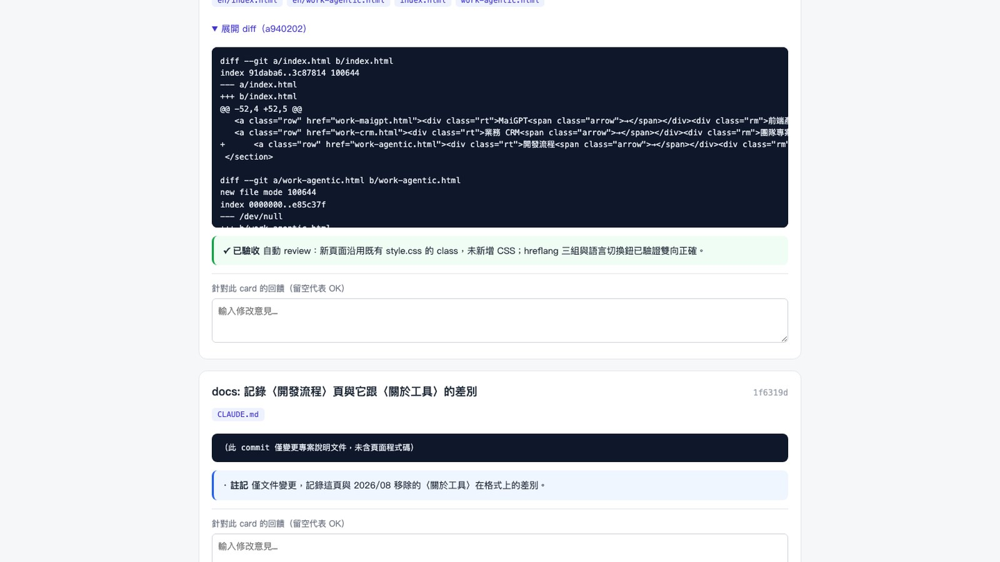

要解決的問題
三條線的節奏不同：官網持續迭代，CRM 依業務需求推進，MaiGPT 配合改版排程。瓶頸不在寫程式，而在上下文切換：離開一條線兩天再回來，須先重建「上次做到哪、為什麼那樣決定」。加上與團隊有一小時時差，這項成本再往上加。
所以流程都指向同一件事：把重複出現的判斷寫成可以重跑的程序。
自動產生驗收頁
開發完成後
一輪改動完成後，程序會把該次變更整理成一頁驗收清單：每筆改動一張卡片，標題是改了什麼，展開後是 diff 與我的初步判定（已驗收／待確認／註記），每張卡片下方可直接寫回饋。
三檔判定有明確分界：已驗收用於改動本身可自證的情況，例如沿用既有樣式、未新增相依；待確認用於有邊界情境或取捨沒把握時，卡片上必須寫出問題是什麼；註記用於不需要決定、但事後會想回頭看的背景。判準先行界定，是為了避免「看起來沒問題」這種模糊結論：沒把握就不能標為已驗收。
頁面透過通道服務取得臨時網址推送至手機，通勤時就能逐項確認。驗收因此不必與開發占用同一段時間：開發在桌前，驗收在路上。

手機派任務與每日彙整
開發環境接上通訊軟體後，任務可自手機指派、在本機執行、完成後回報。手機情境不適合逐步確認，因此改為先執行後回報，僅在具破壞性或對外發送時才事前確認；這條分界寫在設定檔裡。
每日結束時另有一項程序彙整當天的實際產出：版本控制紀錄、任務狀態、文件變更，整理成完成事項與隔日預計工作。遠端工作的可見度由此處理，不需在會議上逐項回想。
把慣例寫成流程
22 項
反覆出現的作業各自寫成獨立程序：需求開單的格式與必填欄位、既有實作的分析、端對端測試（啟動環境、瀏覽器操作、產出驗收文件）、使用者手冊的更新與發布、每日任務狀態檢查。
要不要寫成程序，看的是是否需要重複解釋。同一件事向不同對象解釋第三次就值得固定下來；只做一次的不寫。這套做法後來也用在實習以外，另建立四項用於求職素材的程序，包含跨文件的一致性稽核。